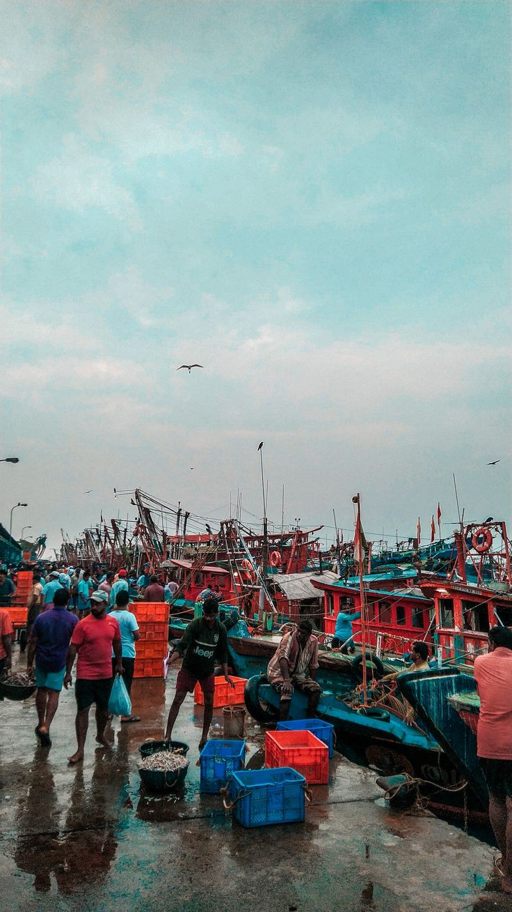

Vizag Fishing Harbour
The Vizag Fishing Harbour is one of the largest ports on India's eastern coastline. Filled with vibrant wooden trawlers, colorful crates, and busy fishermen, it represents the heart of the city's coastal seafood trade and traditional maritime lifestyle.

Busy early morning activity along the docks at Vizag Fishing Harbour.